FAQ
FAQ GUIDE
GUIDE CROSS
CROSS F2L
F2L PLL
PLL BEGINNER's
BEGINNER'sOrientation of Last Layer (OLL)

OLL is the 3rd step of the Fridrich Method. Right after you finish the F2L, your cube will look like one of the following cases on top. After performing the algorithm, your cube should be all yellow on top.
2look OLL
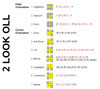You need all of the 57 algorithms below to solve this stage in a single step. However, if you are willing to do it in two steps instead, you can use what is called the 2look OLL. You then only have to learn 9 of them (at the expense of speed obviously). Watch my video HERE to learn the 2look OLL.
Also, here is a printable sheet of all cases and solutions for reference, in pdf format (Thank you Husayn for making and sending me this sheet)
OLL Trainer
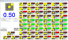This is a program that I wrote that helps you practice OLLs. (Almost exactly same thing as my PLL trainer). It generates a random OLL, and then it times how quickly you can perform it. It keeps track of all of this, gives you averages, etc. To rotate any of the OLL's in the program, just rotate the image in the folder. The program simply loads these images when it starts.
DOWNLOAD, How-to run on Linux (thanks Gopi!)
Algorithms I use (or want to use)
Follow down the list and learn the algs. Use more as a guidline than a rule. Skip hard ones if you think they are hard, come back, etc...
PRINTABLE PAGE (pdf) (thanks Andy! also check out his nice website for more pdfs)
Alternate printable page (html) is provided if you want to print these out.
And don't forget the NOTATION PAGE
First: learn a single trigger, (R U R' U'). Right away you can easily know almost 19 OLL Algorithms, and thats out of 57! Thats exactly a THIRD of all OLLs.
| Case | Diagram | Algorithm | Comment |
| 1 | 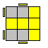 | F (R U R' U') F' | Simplest OLL of them all |
| 2 | 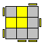 | F (R U R' U') (R U R' U') F' | Just repeat the trigger one more time |
| 3 |  |
F (R U R' U') (R U R' U') (R U R' U') F' y (R' U' R) U' (R' U R) U' (R' U2 R) |
Just repeat the trigger 3 times. The second one is the one I use, its much faster |
| 4 | 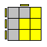 | f (R U R' U') f' | Instead of F F' you now have f and f ' |
| 5 | 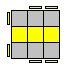 | f (R U R' U') (R U R' U') f' | Just repeat the RUR'U' trigger 2 times |
| 6 | 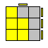 | f ' (L' U' L U) f | This is the reflection of P. You are just doing the algorithm with your left hand. It should be quiet easy to transfer it with just a little bit of practice. I execute it more like f' L' U' L U y' r |
| 7 | 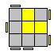 | F' (L' U' L U) (L' U' L U) F | This is reflection of Case 2. Just do the trigger twice. |
| 8 | 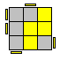 | [F (R U R' U') F'] U [F (R U R' U') F' ] | This is just T, twice, with a U in between. |
| 9 | 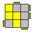 | [F' (L' U' L U) F] y [F (R U R' U') F'] y (r U R' U)(R' F R F') R U2 r' |
Reflection of case 1 followed by case 1, with a y rotation in between, and it comes very natural in that position I find. Second algorithm was suggested to me and I kinda like it. |
| 10 | 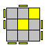 | [f (R U R' U') f'] U [F (R U R' U') F' ] | This is just case4 followed by case 1, with a U in between |
| 11 | 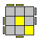 | [f (R U R' U') f'] U' [F (R U R' U') F' ] | This is case 10 with a U' instead of U |
| 12 | 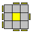 | [F (R U R' U') F' ] [f (R U R' U') f'] | This is T (case 1) followed by P (case 4) |
| 13 | 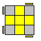 | [f (R U R' U') f'] [F (R U R' U') F'] R U2' R2' U' R2 U' R2' U2 R |
This is just like the above, but T (case1) and P (case 4) are done in reverse order! You should really learn the second algorithm though, its much faster. Its the one everyone fast uses too. |
| 14 | 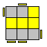 | (r U r') (R U R' U') (r U' r') | This algorithm is very easy to remember |
| 15 |  |
(l' U' l) (L' U' L U) (l' U l) | Reflection of case 14 |
| 16 | 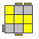 | R' [F (R U R' U') F'] U R | Look how neatly case 1 (T) is placed in middle there :) |
| 17 | 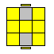 | (R U R' U') M' (U R U' r') | I find this one pretty easy to remember too and it flows very nicely. It doesn't come up too often though |
| 18 | 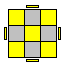 | M U (R U R' U') M2 (U R U' r') | This almost never comes up, so skip it if you want. But its not too bad. Note the last part is the same as in case 17. |
| 19 | 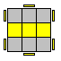 | F (R U R' U') R F' (r U R' U') r' | The second trigger in brackets is almost the RUR'U' trigger |
Second: Learn another trigger, (R' F R F')
| Case | Diagram | Algorithm | Comment |
| 20 | 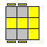 | (R U R' U') (R' F R F') | Just the two triggers is all it takes :) |
| 21 | 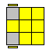 | (r U R' U') (r' F R F') | Same as T2 (case 20) but the first R's are actually double layer R turn (r) |
| 22 | 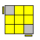 | F' (r U R' U') (r' F R ) | Same as chameleon (case21) , with the last F' moved to the front! |
| 23 | 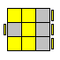 | R' U' (R' F R F') U R | There are some setup moves involved here. Note how U R "undoes" the R' U' you do in beginning |
| 24 | 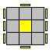 | (R U2 R') (R' F R F') U2 (R' F R F') | The R' R' is obviously made as a giant R2 in the actual execution |
| 25 |  |
(R U2 R') (R' F R F') (R U2 R') | Incredibly easy to remember, and fast to execute. Again, the R' R' is made as a big R2. Note first part is the same as in case 24 |
| 26 | 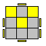 | M U (R U R' U') M' (R' F R F') |
pretty easy to remember. Also note how similar this algorithm is to case 17 |
| 27 | 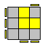 | (R' F R' F') R2 U2 y (R' F R F') | Be warned that the first trigger is not really R'FRF' trigger. But almost... the second R turn in it is R', not R |
You now know almost half of the OLL's!
Third: A very similar trigger to the first trigger. It is (R U R' U). Only difference is that the last move is a U not a U'
| Case | Diagram | Algorithm | Comment |
| 28 | 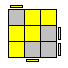 | (R U R' U) (R U' R' U') (R' F R F') | Very quick to perform. Second part is same as first, but with U's instead of Us |
| 29 | 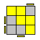 | (L' U' L U') (L' U L U) (L F' L' F) | The reflection. Should be easy enough to mirror it. |
| 30 | 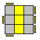 | (R U R' U) R d' R U' R' F' (R' U' R U') R' d R' U R B |
I use the first one, but both are very good, and its definitely a judgement call per individual |
| 31 | 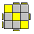 | (R U R' U) (R' F R F') U2 (R' F R F') | Easy to remember. Note similarity to case 24. |
| 32 | 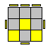 | [F (R U R' U) F'] y' U2 (R' F R F') | Easy. This is ALMOST case #1, but with that modified trigger. I execute this by doing y' R' U2 instead of the F' y' U2. But thats a detail. |
| 33 |  |
r' U2 (R U R' U) r | Easy. |
| 34 | 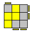 | (r U R' U) R U2 r' | slight variation of the trigger and then easy finish |
Fourth: Sune and its derivatives
| Case | Diagram | Algorithm | Comment |
| 35 | 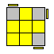 | (R U R' U) R U2 R' | Very quick OLL. Look what happens to one of the F2L pairs as you execute it. The whole algorithm is just: Take out a pair, move it over, insert it back. It's also very similar to case 34 |
| 36 | 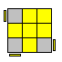 | R U2 R' U' R U' R' | This algorithm is the same as case 35 in philosophy. Track the F2L pair. |
| 37 | 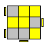 | [ R' U2 (R U R' U) R] y [F (R U R' U') F']
(R' F R F') (R' F R F') (R U R' U') (R U R') |
First part is just the sune from different angle (similar to case 33), and second part is the T OLL. The second algorithm was suggested to me by someone, and I kinda like it even more! To do the R'FRF' parts, I actually make a cube rotation x and then execute them as R'URU'. |
| 38 | 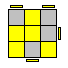 | [(R U R' U) R U2 R'] [F (R U R' U') F'] | This is basically the Sune followed by the T(case 1) |
Algs that you just learn because they are incredibly fast, but don't really fit with what I've been doing above. There is 18 more of those
| Case | Diagram | Algorithm | Comment |
| 39 | 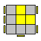 | (r U R' U) (R U' R' U) R U2' r' | Incredibly quick to execute. I love this algorithm. When you execute it, it feels like the two fingers on right and left hand are in battle, flicking towards each other the top layer like crazy :) |
| 40 | 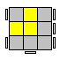 | l' U' L U' L' U L U' L' U2 l y2 r' U' R U' R' U R U' R' U2 r |
I execute one or the other depending on which angle I run into the OLL in. It saves me a y2 rotation. First one is just reflection of case 39. |
| 41 | 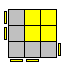 | r U2 R' U' R U' r' | quick alg. Note how similar it is to 36! Just replace R->r. Uncanny! |
| 42 | 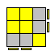 | F R U' R' U' R U R' F' | very quick. Note the Y permutation starts with this exactly |
| 43 | 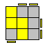 | r' U' R U' R' U2 r | quick, and very similar to sunes (cases 34-38) |
| 44 | 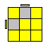 | M' U M U2 M' U M | easy. Look what happens to one of the cross edges. You take it out, do a U2, and put it back from the other side. |
| 45 | 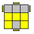 | (R U R2 U') (R' F) (R U) (R U') F' (R U R' U') x D' R' U R U' D x' |
I cannot decide which one is better... you have to pick for yourself |
| 46 | 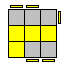 | F U R U' R2 F' R (U R U' R') | note how the last part just inserts an F2L pair back. |
| 47 | 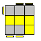 | R' F R U R' F' R y' (R U' R') | pretty nice alg. Last part just inserts F2L pair |
| 48 | 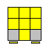 | R2 [D (R' U2) R] [D' (R' U2) R'] | I don't like this alg too much. Note the repeating structure. |
| 49 | 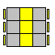 | R' U2 R2 U R' U R U2 x' U' R' U | ... i don't like this one too much |
| 50 | 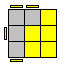 | R U B' U' R' U R B R' R d L' d' R' U R B R' |
The B' is very clumsily done. Try do it with your thumb, then the rest is very quick. I use the second algorithm, but I'm not sure which one is better |
| 51 |  |
R' U' F U R U' R' F' R y2 L' d' R d L U' L' B' L |
I use the second one, but I think the first may be a little better. |
| 52 | 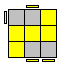 | R B' R' U' R U B U' R' y2 L F' (L' U' L U) F U' L' |
Try to use the thumb for the B' too, i think. Pretty clumsy as well, but after it its quick |
| 53 | 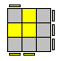 | R' F R2 B' R2' F' R2 B R' | Again, I do the B' with my thumb. Awkward alg. ew. |
| 54 |  |
(R U R' U') R U' R' F' U' F (R U R') [F (R U R' U') F'] U2 [(R U R' U') (R' F R F')] |
flows nicely, no regrips. The second one is longer but easier to remember: It is just case 1 followed by U2 and case 20! |
| 55 | (R2 U R' B' R) U' (R2 U R B R') |
Ok the first R2 is executed in a weird way. You overgrip the R slice to do the R2 both times. After doing the R2's you have to be able to the U with a finger flick without a regrip. The alg is actually quite fast. | |
| 56 | (R' U' R) y' x' (R U') (R' F) (R U R') (R U R' U') R' F R2 U R' U' F' |
after the ugly y'x' the alg is incredibly fast. I love executing that part. I give a second alternative in case someone wants something else because they dont like the rotation. (Note that the second alg looks very much like the T PLL :) ) | |
| 57 | R U R' y R' F R U' R' F' R (R U R' U) (R' F R F') R U2 R' |
I try to use the first one. The second one was suggested to me and its incredibly easy to memorize, but I don't think its AS fast as say the first one. |